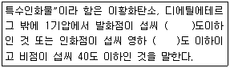
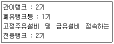
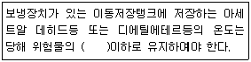
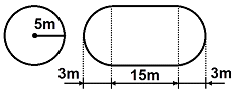

위험물기능사 (2012-10-20 기출문제)
1과목: 화재 예방과 소화방법
1. 소화기에 “A-2”로 표시되어 있었다면 숫자 “2”가 의미하는 것은 무엇인가?
- 소화기의 제조번호
- 소화기의 소요단위
- 소화기의 능력단위
- 소화기의 사용순위
(정답률: 84%)

2. 화재 시 물을 이용한 냉각소화를 할 경우 오히려 위험성이 증가하는 물질은?
- 질산에틸
- 마그네슘
- 적린
- 황
(정답률: 87%)
3. 석유류가 연소할 때 발생하는 가스로 강한 자극적인 냄새가 나며 취급하는 장치를 부식시키는 것은?
- H2
- CH4
- NH3
- SO2
(정답률: 75%)
4. 위험물안전관리법령에 따른 건축물 그 밖의 공작물 또는 위험물의 소요단위의 계산방법의 기준으로 옳은 것은?
- 위험물은 지정수량의 100배를 1소요단위로 할 것
- 저장소의 건축물은 외벽에 내화구조인 것은 연면적 100m2 를 1소요단위로 할 것
- 저장소의 건축물은 외벽이 내화구조가 아닌 것은 연면적 50m2 를 1소요단위로 할 것
- 제조소 또는 취급소용으로서 옥외에 있는 공작물인 경우 최대수평투영면적 100m2 를 1소요단위로 할 것
(정답률: 58%)
5. 위험물안전관리법령상 특수인화물의 정의에 대해 다음 ( )안에 알맞은 수치를 차례대로 옳게 나열한 것은?

- 100, 20
- 25, 0
- 100, 0
- 25, 20
(정답률: 86%)
6. 지정수량 10배의 위험물을 저장 또는 취급하는 제조소에 있어서 연면적이 최소 몇 m2 이면 자동화재탐지설비를 설치해야 하는가?
- 100
- 300
- 500
- 1000
(정답률: 67%)
7. 황린에 대한 설명으로 옳지 않은 것은?
- 연소하면 악취가 있는 것은 검은색 연기를 낸다.
- 공기 중에서 자연발화 할 수 있다.
- 수중에 저장하여야 한다.
- 자체 증기도 유독하다.
(정답률: 78%)
8. 다음 중 화재 시 사용하면 독성의COCl2 가스를 발생시킬 위험이 가장 높은 소화약제는?
- 액화이산화탄소
- 제1종 분말
- 사염화탄소
- 공기포
(정답률: 79%)
9. 위험물안전관리법령상 탄산수소염류의 분말소화기가 적응성을 갖는 위험물이 아닌 것은?
- 과염소산
- 철분
- 톨루엔
- 아세톤
(정답률: 53%)
10. 위험물의 유별에 따른 성질과 해당 품명의 예가 잘못 연결된 것은?
- 제1류 : 산화성 고체 -무기과산화물
- 제2류 :가연성 고체 -금속분
- 제3류 :자연발화성 물질 및 금수성 물질 -황화린
- 제5류 : 자기반응성물질 -히드록실아민염류
(정답률: 75%)
11. 금속분의 연소 시 주수소화 하면 위험한 원인으로 옳은 것은?
- 물에 녹아 산이 된다.
- 물과 작용하여 유독가스를 발생한다.
- 물과 작용하여 수소가스를 발생한다.
- 물과 작용하여 산소가스를 발생한다.
(정답률: 86%)
12. 트리에틸알루미늄의 화재 시 사용할 수 있는 소화 약제(설비)가 아닌 것은?
- 마른모래
- 팽창질석
- 팽창진주암
- 이산화탄소
(정답률: 87%)
13. 공정 및 장치에서 분진폭발을 예방하기 위한 조치로서 가장 거리가 먼 것은?
- 플랜트는 공정별로 분류하고 폭발의 파급을 피할 수 있도록 분진취급 공정을 습식으로 한다.
- 분진이 물과 반응하는 경우는 물 대신 휘발성이 적은 유류를 사용하는 것이 좋다.
- 배관의 연결부위나 기계가동에 의해 분진이 누출될 염려가 있는 곳은 흡인이나 밀폐를 철저히 한다.
- 가연성분진을 취급하는 장치류는 밀폐하지 말고 분진이 외부로 누출되도록 한다.
(정답률: 75%)
14. 위험물안전관리법상 제조소등에 대한 긴급사용정지 명령에 관한 설명으로 옳은 것은?
- 시.도지사는 명령을 할 수 없다.
- 제조소등의 관계인 뿐 아니라 해당시설을 사용하는 자에게도 명령할 수 있다.
- 제조소등의 관계자에게 위법사유가 없는 경우에도 명령할 수 있다.
- 제조소등의 위험물취급설비의 중대한 결함이 발견 되거나 사고우려가 인정되는 경우에만 명령할 수 있다.
(정답률: 52%)
15. 주유취급소에 다음과 같이 전용탱크를 설치하였다. 최대로 저장 . 취급할 수 있는 용량은 얼마인가? (단, 고속도로 외의 도로변에 설치하는 자동차용 주유취급소인 경우이다.)

- 103, 200리터
- 104, 600리터
- 123, 200리터
- 124, 200리터
(정답률: 45%)
16. 다음 중 발화점이 낮아지는 경우는?
- 화학적 활성도가 낮을 때
- 발열량이 클 때
- 산소와 친화력이 나쁠 때
- CO2 와 친화력이 높을 때
(정답률: 63%)
17. 옥외저장소에 덩어리 상태의 유황만을 지반면에 설치한 경계표시의 안쪽에서 저장할 경우 하나의 경계 표시의 내부면적은 몇 m2 이하 이어야 하는가?
- 75
- 100
- 300
- 500
(정답률: 66%)
18. 연소의 종류와 가연물을 틀리게 연결한 것은?
- 증발연소 - 가솔린, 알코올
- 표면연소 - 코크스, 목탄
- 분해연소 - 목재, 종이
- 자기연소 - 에테르, 나프탈렌
(정답률: 67%)
19. 화재종류 중 금속화재에 해당하는 것은?
- A급
- B급
- C급
- D급
(정답률: 89%)
20. 다음 중 물과 접촉하면 열과 산소가 발생하는 것은?
- NaClO2
- NaClO3
- KMnO4
- Na2O2
(정답률: 63%)
2과목: 위험물의 화학적 성질 및 취급
21. 다음 위험물 중 물에 대한 용해도가 가장 낮은 것은?
- 아크릴산
- 아세트알데히드
- 벤젠
- 글리세린
(정답률: 70%)
22. 위험물의 저장방법에 대한 설명으로 옳은 것은?
- 황화린은 알코올 또는 과산화물 속에 저장하여 보관한다.
- 마그네슘은 건조하면 분진폭발의 위험성이 있으므로 물에 습윤하여 저장한다.
- 적린은 화재예방을 위해 할로겐 원소와 혼합하여 저장한다.
- 수소화리튬은 저장용기에 아르곤과 같은 불활성 기체를 봉입한다.
(정답률: 70%)
23. 질산에틸과 아세톤의 공통적인 성질 및 취급 방법으로 옳은 것은?
- 휘발성이 낮기 때문에 마개 없는 병에 보관하여도 무방하다.
- 점성이 커서 다른 용기에 옮길 때 가열하여 더운 상태에서 옮긴다.
- 통풍이 잘되는 곳에 보관하고 불꽃 등의 화기를 피하여야 한다.
- 인화점이 높으나 증기압이 낮으므로 햇빛에 노출된 곳에 저장이 가능하다.
(정답률: 84%)
24. 위험물안전관리법령에 의해 위험물을 취급함에 있어서 발생하는 정전기를 유효하게 제거하는 방법으로 옳지 않는 것은?
- 인화방지망 설치
- 접지 실시
- 공기 이온화
- 상대습도를 70% 이상 유지
(정답률: 84%)
25. 제2류 위험물을 수납하는 운반용기의 외부에 표시 하여야 하는 주의사항으로 옳은 것은?
- 제2류 위험물 중 철분.금속분.마그네슘 또는 이들 중 어느 하나 이상을 함유한 것에 있어서는 “화기주의” 및 “물기주의”, 인화성고체에 있어서는 “화기엄금”, 그 밖의 것에 있어서는 “화기주의”
- 제2류 위험물 중 철분.금속분.마그네슘 또는 이들 중 어느 하나 이상을 함유한 것에 있어서는 “화기주의” 및 “물기엄금”, 인화성고체에 있어서는 “화기주의”, 그 밖의 것에 있어서는 “화기엄금”
- 제2류 위험물 중 철분.금속분.마그네슘 또는 이들 중 어느 하나 이상을 함유한 것에 있어서는 “화기주의” 및 “물기엄금”, 인화성고체에 있어서는 “화기엄금”, 그 밖의 것에 있어서는 “화기주의”
- 제2류 위험물 중 철분.금속분.마그네슘 또는 이들 중 어느 하나 이상을 함유한 것에 있어서는 “화기엄금” 및 “물기엄금”, 인화성고체에 있어서는 “화기엄금”, 그 밖의 것에 있어서는 “화기주의”
(정답률: 65%)
26. 다음 괄호 안에 들어갈 알맞은 단어는?

- 비점
- 인화점
- 융해점
- 발화점
(정답률: 60%)
27. 「자동화재탐지설비 일반점검표」 의 점검내용이 “변형 . 손상의 유무, 표시의 적부, 경계구역일람도의 적부, 기능의 적부”인 점검항목은?
- 감지기
- 중계기
- 수신기
- 발신기
(정답률: 68%)
28. 제4류 위험물의 일반적 성질에 대한 설명으로 틀린 것은?
- 발생증기가 가연성이며 공기보다 무거운 물질이 많다.
- 정전기에 의하여도 인화할 수 있다.
- 상온에서 액체이다.
- 전기도체이다.
(정답률: 71%)
29. 트리니트로톨루엔에 관한 설명으로 옳지 않은 것은?
- 일광을 쪼이면 갈색으로 변한다.
- 녹는점은 약 81℃ 이다.
- 아세톤에 잘 녹는다.
- 비중은 약 1.8 인 액체이다.
(정답률: 41%)
30. 제5류 위험물의 일반적인 성질에 대한 설명 중 틀린 것은?
- 자기연소를 일으키며 연소 속도가 빠르다.
- 무기물이므로 폭발의 위험이 있다.
- 운반용기 외부에 “화기엄금” 및 “충격주의” 주의사항 표시를 하여야 한다.
- 강산화제 또는 강산류와 접촉 시 위험성이 증가한다.
(정답률: 63%)
31. KMnO4 의 지정수량은 몇 kg 인가?
- 50
- 100
- 300
- 1000
(정답률: 52%)
32. 알코올에 관한 설명으로 옳지 않은 것은?
- 1가 알코올은 OH 기의 수가 1개인 알코올을 말한다.
- 2차 알코올은 1차 알코올이 산화된 것이다.
- 2차 알코올이 수소를 잃으면 케톤이 된다.
- 알데히드가 환원되면 1차 알코올이 된다.
(정답률: 51%)
33. 제조소 및 일반취급소에 설치하는 자동화재탐지설비의 설치기준으로 틀린 것은?
- 하나의 경계구역은 600m2 이하로 하고, 한변의 길이는 50m 이하로 한다.
- 주요한 출입구에서 내부 전체를 볼 수 있는 경우 경계 구역은 1000m2 이하로 할 수 있다.
- 하나의 경계구역이 300m2 이하이면 2개 층을 하나의 경계구역으로 할 수 있다.
- 비상전원을 설치하여야 한다.
(정답률: 72%)
34. 제6류 위험물에 해당하지 않는 것은?
- 농도가 50wt%인 과산화수소
- 비중이 1.5 인 질산
- 과요오드산
- 삼불화브롬
(정답률: 54%)
35. 이황화탄소의 성질에 대한 설명 중 틀린 것은?
- 연소할 때 주로 황화수소를 발생한다.
- 증기비중은 약 2.6이다.
- 보호액으로 물을 사용한다.
- 인화점이 약 -30℃ 이다.
(정답률: 48%)
36. 그림과 같이 횡으로 설치한 원형탱크의 용량은 약 몇 m3 인가? (단, 공간용적은 내용적의 10/100이다.)

- 1690.9
- 1335.1
- 1268.4
- 1201.7
(정답률: 56%)
37. 하나의 위험물저장소에 다음과 같이 2가지 위험물을 저장하고 있다. 지정수량 이상에 해당하는 것은?
- 브롬산칼륨 80kg, 염소산칼륨 40kg
- 질산 100kg, 과산화수소 150kg
- 질산칼륨 120kg, 중크롬산나트륨 500kg
- 휘발유 20L, 윤활유 2000L
(정답률: 50%)
38. 알킬알루미늄등 또는 아세트알데히드등을 취급하는 제조소의 특례기준으로서 옳은 것은?
- 알킬알루미늄등을 취급하는 설비에는 불활성기체 또는 수증기를 봉입하는 장치를 설치한다.
- 알킬알루미늄등을 취급하는 설비는 은 · 수은 · 동 · 마그네슘을 성분으로 하는 것으로 만들지 않는다.
- 아세트알데히드등을 취급하는 탱크에는 냉각장치 또는 보냉장치 및 불활성기체 봉입장치를 설치한다.
- 아세트알데히드등을 취급하는 설비의 주위에는 누설범위를 국한하기 위한 설비와 누설되었을 때 안전한 장소에 설치된 저장실에 유입시킬 수 있는 설비를 갖춘다.
(정답률: 59%)
39. 적린에 관한 설명 중 틀린 것은?
- 물에 잘 녹는다.
- 화재시 물로 냉각소화 할 수 있다.
- 황린에 비해 안정하다.
- 황린과 동소체이다.
(정답률: 63%)
40. 탄화칼슘에 대한 설명으로 틀린 것은?
- 시판품은 흑회색이며 불규칙한 형태의 고체이다.
- 물과 작용하여 산화칼슘과 아세틸렌을 만든다.
- 고온에서 질소와 반응하여 칼슘시안아미드(석회질소)가 생성된다.
- 비중은 약 2.2 이다.
(정답률: 50%)
41. 클레오소트유에 대한 설명으로 틀린 것은?
- 제3석유류에 속한다.
- 무취이고 증기는 독성이 없다.
- 상온에서 액체이다.
- 물보다 무겁고 물에 녹지 않는다.
(정답률: 60%)
42. 운송책임자의 감독,지원을 받아 운송하여야 하는 위험물은?
- 알킬알루미늄
- 금속나트륨
- 메틸에틸케톤
- 트리니트로톨루엔
(정답률: 83%)
43. 복수의 성상을 가지는 위험물에 대한 품명지정의 기준상 유별의 연결이 틀린 것은?
- 산화성고체의 성상 및 가연성고체의 성상을 가지는 경우 : 가연성고체
- 산화성고체의 성상 및 자기반응성물질의 성상을 가지는 경우 : 자기반응성물질
- 가연성고체의 성상과 자연발화성물질의 성상 및 금수성물질의 성상을 가지는 경우 : 자연 발화성물질 및 금수성물질
- 인화성액체의 성상 및 자기반응성물질의 성상을 가지는 경우 : 인화성액체
(정답률: 59%)
44. 다음 중 산을 가하면 이산화염소를 발생시키는 물질은?
- 아염소산나트륨
- 브롬산나트륨
- 옥소산칼륨(요오드산칼륨)
- 중크롬산나트륨
(정답률: 78%)
45. 용량 50만L 이상의 옥외탱크저장소에 대하여 변경 허가를 받고자 할 때 한국 소방산업기술원으로부터 탱크의 기초 · 지반 및 탱크본체에 대한 기술검토를 받아야 한다. 다만, 소방방재청장이 고시하는 부분적인 사항의 변경하는 경우에는 기술검토가 면제되는데 다음 중 기술검토가 면제되는 경우가 아닌 것은?
- 노즐, 맨홀을 포함한 동일한 형태의 지붕판의 교체
- 탱크 밑판에 있어서 밑판 표면적의 50% 미만의 육성보수공사
- 탱크의 옆판 중 최하단 옆판에 있어서 옆판 표면적의 30% 이내의 교체
- 옆판 중심선의 600mm 이내의 밑판에 있어서 밑판의 원주길이 10% 미만에 해당하는 밑판의 교체
(정답률: 53%)
46. 제3류 위험물에 해당하는 것은?
- NaH
- Al
- Mg
- P4S3
(정답률: 57%)
47. 금속나트륨, 금속칼륨 등을 보호액 속에 저장하는 이유를 가장 옳게 설명한 것은?
- 온도를 낮추기 위하여
- 승화하는 것을 막기 위하여
- 공기와의 접촉을 막기 위하여
- 운반시 충격을 적게 하기 위하여
(정답률: 83%)
48. 니트로셀룰로오스의 저장·취급방법으로 옳은 것은?
- 건조한 상태로 보관하여야 한다.
- 물 또는 알코올 등을 첨가하여 습윤시켜야 한다.
- 물기에 접촉하면 위험하므로 제습제를 첨가하여야 한다.
- 알코올에 접촉하면 자연발화의 위험이 있으므로 주의하여야 한다.
(정답률: 67%)
49. 주유취급소에 설치하는 “주유중엔진정지” 라는 표시를 한 게시판의 바탕과 문자의 색상을 차례대로 옳게 나타낸 것은?
- 황색, 흑색
- 흑색, 황색
- 백색, 흑색
- 흑색, 백색
(정답률: 51%)
50. 고형알코올 2000kg 과 철분 1000kg의 각각 지정 수량 배수의 총합은 얼마인가?
- 3
- 4
- 5
- 6
(정답률: 55%)
51. 제3류 위험물 중 은백색 광택이 있고 노란색 불꽃을 내며 연소하며 비중이 약 0.97, 융점이 97.7 ℃인 물질의 지정수량은 몇 kg 인가?
- 10
- 20
- 50
- 300
(정답률: 59%)
52. 위험물에 대한 설명으로 옳은 것은?
- 이황화탄소는 연소시 유독성 황화수소가스를 발생한다.
- 디에틸에테르는 물에 잘 녹지 않지만 유지 등을 잘녹이는 용제이다.
- 등유는 가솔린보다 인화점이 높으나, 인화점은 0℃미만이므로 인화의 위험성은 매우 높다.
- 경유는 등유와 비슷한 성질을 가지지만 증가비중이 공기보다 가볍다는 차이점이 있다.
(정답률: 43%)
53. 제1류 위험물에 해당하지 않는 것은?
- 납의산화물
- 질산구아니딘
- 퍼옥소이황산염류
- 염소화이소시아눌산
(정답률: 74%)
54. 벤젠을 저장하는 옥외탱크저장소가 액표면적이 45m2 인 경우 소화난이도등급은?
- 소화난이도등급 Ⅰ
- 소화난이도등급 Ⅱ
- 소화난이도등급 Ⅲ
- 제시된 조건으로 판단할 수 없음
(정답률: 43%)
55. 위험물옥외저장탱크의 통기관에 관한 사항으로 옳지 않는 것은?
- 밸브없는 통기관의 직경은 30mm 이상으로 한다.
- 대기밸브부착 통기관은 항시 열려 있어야 한다.
- 밸브없는 통기관의 선단은 수평면보다 45도 이상 구부려 빗물 등의 침투를 막는 구조로 한다.
- 대기밸브부착 통기관은 5kPa 이하의 압력차이로 작동할 수 있어야 한다.
(정답률: 74%)
56. 적린과 유황의 공통되는 일반적 성질이 아닌 것은?
- 비중이 1보다 크다.
- 연소하기 쉽다.
- 산화되기 쉽다.
- 물에 잘 녹는다.
(정답률: 71%)
57. 셀룰로이드에 대한 설명으로 옳은 것은?
- 질소가 함유된 유기물이다.
- 질소가 함유된 무기물이다.
- 유기의 염화물이다.
- 무기의 염화물이다.
(정답률: 66%)
58. 다음 중 무색투명한 휘발성 액체로서 물에 녹지 않고 물보다 무거워서 물 속에 보관하는 위험물은?
- 경유
- 황린
- 유황
- 이황화탄소
(정답률: 52%)
59. 과산화수소에 대한 설명으로 틀린 것은?
- 불연성 물질이다.
- 농도가 약 3wt% 이면 단독으로 분해폭발 한다.
- 산화성 물질이다.
- 점성이 있는 액체로 물에 용해된다.
(정답률: 64%)
60. 제4류 위험물 중 제2석유류의 위험등급 기준은?
- 위험등급 Ⅰ의 위험물
- 위험등급 Ⅱ의 위험물
- 위험등급 Ⅲ의 위험물
- 위험등급 Ⅳ의 위험물
(정답률: 52%)